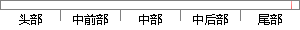

在需要查看答卷信息问卷的操作列点击查看答卷统计按钮查看统计数据。
片段位置图

相似结果|
相似片段 1：，可通过卡片的形式查看问卷数据。如下图所示：624、点击 按钮，可查看此问卷的问卷报表。报表显示问卷名、说明创建日期、结束日期、所收集问卷数、问卷题目等。如下图所示：5、点击 按钮，可将答卷记录清空，但此
相似片段 2：信息，添加客户信息；查看、修改、删除所有用户信息，添加用户信息；查看所有客户的答卷；查看数据统计结果和进行交叉分析操作；查看个人信息，更改密码。（2）录入员（问卷管理员）权限：查看所有问题，修改、删除
|
※ 片段修改建议 ※
近似词参考：- 需要：必要
- 查看：检察
- 操作：操纵
- 查看：检察
- 查看：检察
系统自动生成语句： 在必要检察答卷信息问卷的操纵列点击检察答卷统计按钮检察统计数据。
注：本片段修改建议为系统自动生成，仅供参考。